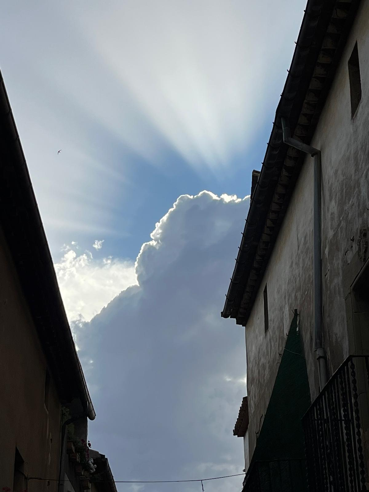
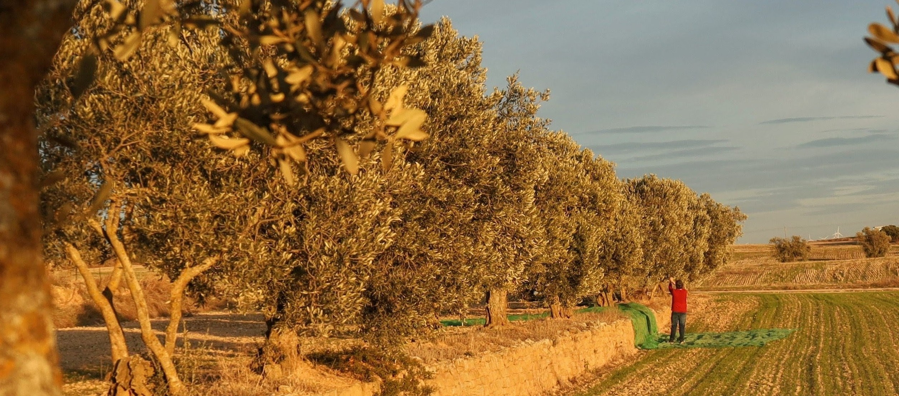

Tarroja de Segarra
Tarroja és un petit municipi de la Segarra de només 7,6 km², situat a la riba del riu Sió, a 460 metres d'altitud, entre Cervera i Torrefeta i Florejacs. El seu territori està dedicat principalment al cultiu de cereals, ametllers i oliveres. Actualment té uns 160 hab., una xifra que creix durant les vacances amb estiuejants que agraeixen poder-s’hi escapar.
Més de mil anys d’història
Tot i que hi ha restes arqueològiques del neolític, l’edat de bronze i l’època romana, la Vila de Tarroja neix durant l’edat mitjana.
Entre els segles X-XI, la Segarra era terra de frontera entre els comtats cristians i territori musulmà. En aquest context, el lloc apareix documentat per primera vegada l’any 1015 com a Turre Rubea (probablement Torre Roja) i, de manera definitiva, en l'acta de consagració del seu castell a la Seu d'Urgell del 1040.
Per tant, al voltant de l’any 1000 Tarroja ja era un nucli sota control cristià, dins l’antic terme de Guissona. Un indret fortificat amb un castell al voltant del qual va créixer la vila closa que dona origen al poble actual.
El poble va estar sota domini d’una família noble que pren el seu nom, els Torroja. Seguint aquest llinatge trobem dominis a Solsona i personatges de la història de Catalunya, com un bisbe de Barcelona, un mestre templer o Agnès de Torroja, qui casant-se amb el vescomte de Cardona uneix les dues famílies més poderoses de la Catalunya central.
La història de la vila inclou cartes de franqueses, bandolers i una parròquia que col·laborava amb les croades. Tampoc hi van faltar conflictes amb la reial Cervera i tropes nobiliàries provocant aldarulls a pobles veïns.
Amb els anys, el caràcter fronterer del poble perd importància i durant segles la vida al poble està marcada pel calendari de l’agricultura de secà, la dependència del clima i les relacions entre propietaris i pagesos. Raó per la qual el paisatge és inseparable de la identitat del poble.
La fi del feudalisme i l’arribada de la vida moderna impulsen el creixement de la població amb nous carrers, cases pairals, edificis fora de l’antic clos... arribant al seu màxim històric l’any 1860 amb 532 habitants.
Passejant pels anys trobem personatges com Antoni Capell i Boneu, batlle de Tarroja als voltants de 1885, compromès amb el catalanisme, signant del Missatge a la Reina Regent (1888) i delegat a les històriques Bases de Manresa (1892).
Al segle XX, Tarroja no queda al marge dels canvis en el món rural o la guerra civil i comença un despoblament sostingut des d’aleshores. Malgrat això sempre ha mantingut la seva autonomia municipal.
El millor testimoni d’aquesta història el trobem passejant pel poble i els camins que l’envolten. Encara que el castell on comença tot ha desaparegut, conserva el nucli antic amb força elements de l’antiga estructura medieval, cases senyorials, el fora vila i també el seu patrimoni religiós amb l’església de Sant Salvador o ermites com Sant Antoni i Sant Julià on encara avui s’apleguen els tarrogencs/ques el Dilluns de Pasqua.
Avui parlem d’un poble viu, on la canalla juga al carrer, el jovent manté vives les festes, els no tan joves fan i desfan mentre els més grans reposen merescudament al poble que els ha vist envellir.
Volem que les Macroplantes de Biogàs siguin el Futur de Tarroja?

.jpg)
